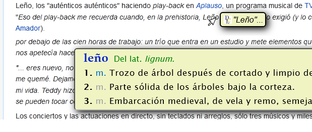

Esta extensión está actualizada a la versión 2.0 dentro de su navegador.
Le contamos las novedades que se han incorporado para que sea aún más cómoda y flexible la consulta del Diccionario de la lengua española:
- Ya no es necesario seleccionar o resaltar palabras para acceder a su definición mediante el menú contextual (salvo en PDF)
- Nuevo método de activación sin clics
- Mejora de las teclas de configuración en el sistema operativo de MacTM
Por tanto, ya son consultables las palabras no seleccionables como las incluidas en enlaces e hipervínculos.
Podrá activar y desactivar esta nueva característica y quedarse con el funcionamiento anterior del menú contextual: solo cuando usted selecciona texto.
La doble pulsación de una tecla, como por ejemplo control [ctrl], provoca la búsqueda de la palabra situada bajo el ratón

Esta característica no está activa por defecto. Puede activarla en la configuración de la extensión.
Las teclas command [⌘] y control [ctrl] han quedado habilitadas en la configuración de la extensión para macOS.
Si detecta algún mal funcionamiento, notifíquelo a través de este formulario.
Aviso: en esta página informativa no funcionan las pruebas de la extensión.